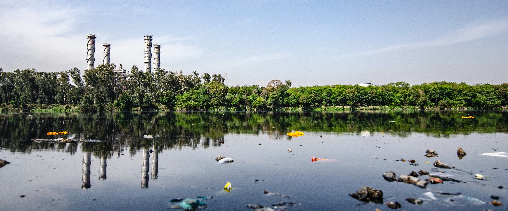

The problem with plastic
In 2017 there it was estimated that there was about 150 million tons of plastic waste in the ocean. Every year, about 8 million tons of plastic is thrown into the ocean. This is equivalent to a garbage truck filled with plastic being dumped in the ocean every minute. If it continues like this at this rate we will have more plastic than fish in our oceans by 2050.
It’s not only the big pieces of plastic that are a threat to the sea and sea life. Microplastics are also a huge part of the problem of the plastic pollution in sea. As plastic is almost indestructible (aside from being incinerated), it won’t go away naturally. It might become smaller and smaller, but never fully disappear.
What are microplastics?
Microplastics are small pieces of plastic (usually under 5mm in size) that fish and other sea creatures will confuse with food like plankton or other fish. It appears from synthethic clothes being washed, vehicle tyres, and the spillage of plastic pellets used by manufacturers. The rain washes the microplastics into rivers and seas. The wind and insects can also carry them, and they can end up in fields when treated sewage waste gets used as fertiliser. Microplastic can not only be found in the ocean, but also the deppest parts of the ocean and even in the Arctic snow. Just recently microplastic pollution was found in the snow at the top of Mount Everest.
If fish keep confusing them with food, they'll eventually end up on our dinner plates when we eat that fish.